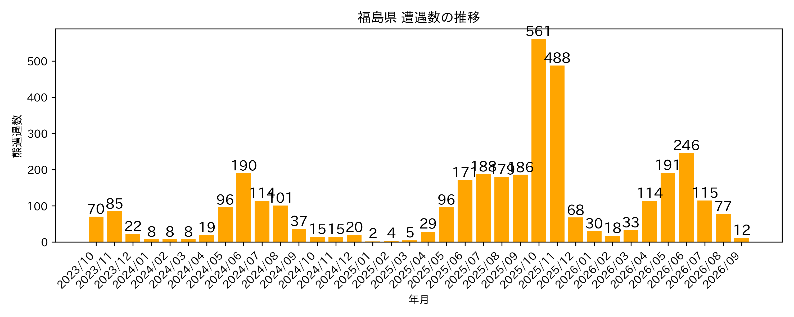

以下のグラフは、各地域におけるクマの遭遇数を直近3年間（月単位）で示したものです。
季節的な変動や遭遇件数の推移を比較できます。
札幌市
札幌市におけるクマの遭遇数（月別・直近3年間）

青森県
青森県におけるクマの遭遇数（月別・直近3年間）

盛岡市
盛岡市におけるクマの遭遇数（月別・直近3年間）

秋田県
秋田県におけるクマの遭遇数（月別・直近3年間）

山形県
山形県におけるクマの遭遇数（月別・直近3年間）

宮城県
宮城県におけるクマの遭遇数（月別・直近3年間）

福島県
福島県におけるクマの遭遇数（月別・直近3年間）

新潟県
新潟県におけるクマの遭遇数（月別・直近3年間）

日光市
日光市におけるクマの遭遇数（月別・直近3年間）

群馬県
群馬県におけるクマの遭遇数（月別・直近3年間）

埼玉県
埼玉県におけるクマの遭遇数（月別・直近3年間）

東京都
東京都におけるクマの遭遇数（月別・直近3年間）

山梨県
山梨県におけるクマの遭遇数（月別・直近3年間）

富山県
富山県におけるクマの遭遇数（月別・直近3年間）

石川県
石川県におけるクマの遭遇数（月別・直近3年間）

福井県
福井県におけるクマの遭遇数（月別・直近3年間）

岐阜県
岐阜県におけるクマの遭遇数（月別・直近3年間）

京都府
京都府におけるクマの遭遇数（月別・直近3年間）